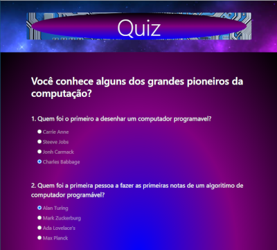
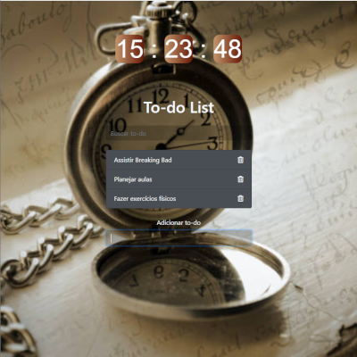
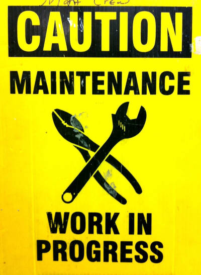

QUIZ application
Uma aplicação de quiz com perguntas e respostas. Esta aplicação aborda temas de javaScript como manipulação do DOM, listener de eventos uso do forEach para calcular os pontos, assim como do setInterval para animar a pontuação. Também o uso do metodo some obtendo um bolean para fechar ou não o popup com o resultado.
This question and answers quiz application goes through JavaScipt subjects such as DOM manipulation, events listeners and the use of it to get hold of user data. As well the forEach method to calculate the score, furthermore the use of setInterval method to animate the score result along with some method, used to receive a boolean and use it to close and reset the application.
To do list application
Uma aplicação para criar bons habitos e organizar uma rotina com todos para serem feitos ao longo dos dias, e tem um reloginho pra acompanhar o andamento do dia. Esta aplicaçao aborda temas de javaScript como o uso de data sets para referenciar elementos do DOM e trabalhar com eles, o uso do filter para filtrar as tarefas pesquisados pelo usuá rio assim como a adição e remoção de classes no DOM para mostrar ou não o que foi pesquisado
A nice application to build good habits and organize a daily routine with the duties to be done as the day go bay, as well you have a clock to avoid being late. This application approaches javaScript subjects such as data sets usage to refer DOM elements and work with them over the application. Furthermore we have the filter usage in synergy with eventListener to get hold of searched data, along with addition and removal of classes to show or not the information being looked.
weather Application
Esta aplicação nos mostra as condições do tempo no timming real de qualquer pais do planeta terra os dados são retirados de uma API bacana. Nesta aplicação os assuntos javaScript abordado, são os requests feito com o fetch utilizando to try/catch para trabalhar os erros. Unindo tambme os conceitos de manipulação do DOM para mostrar na tela os dados obtidos do servidor.
This application is showing the weather conditions based on the information fetched from a weather API. So you can search for the whole world countries and know the weather conditions from this location. The javaScript subject going over here is to fetch a data using the try/catch blocks to treat any error during application execution. Joining as well the concepts of DOM manipulation to show over the screen the fetched data.